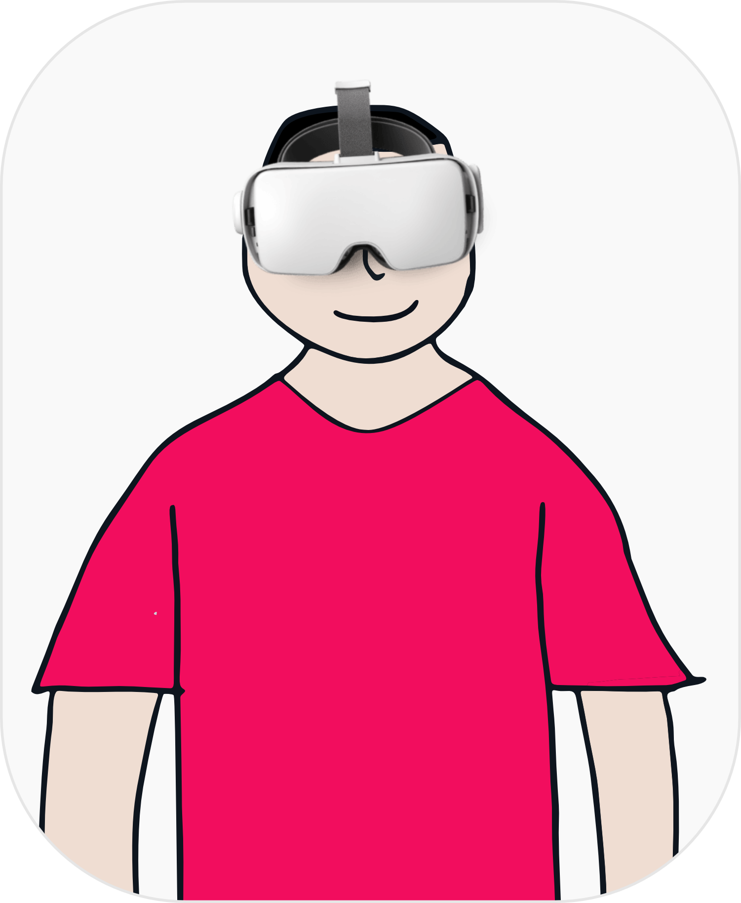
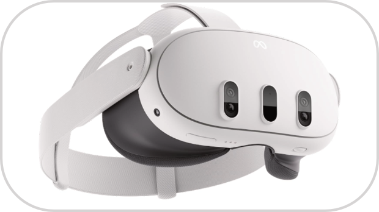
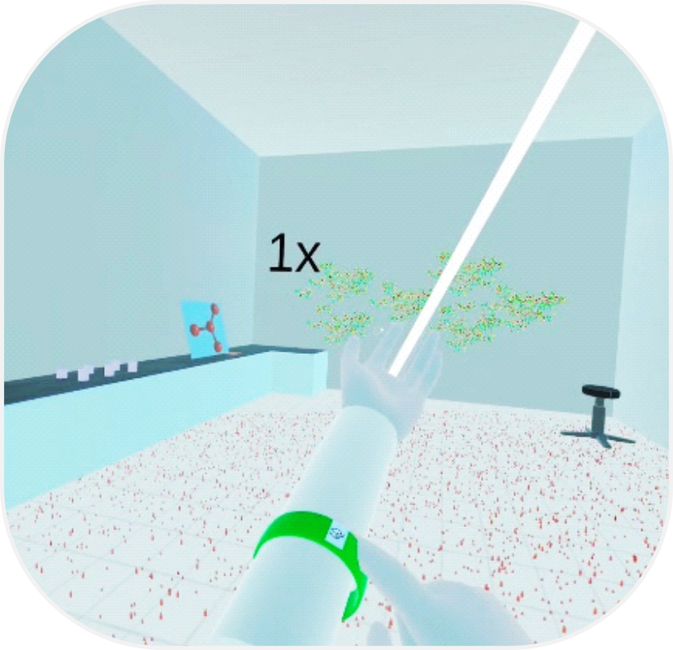
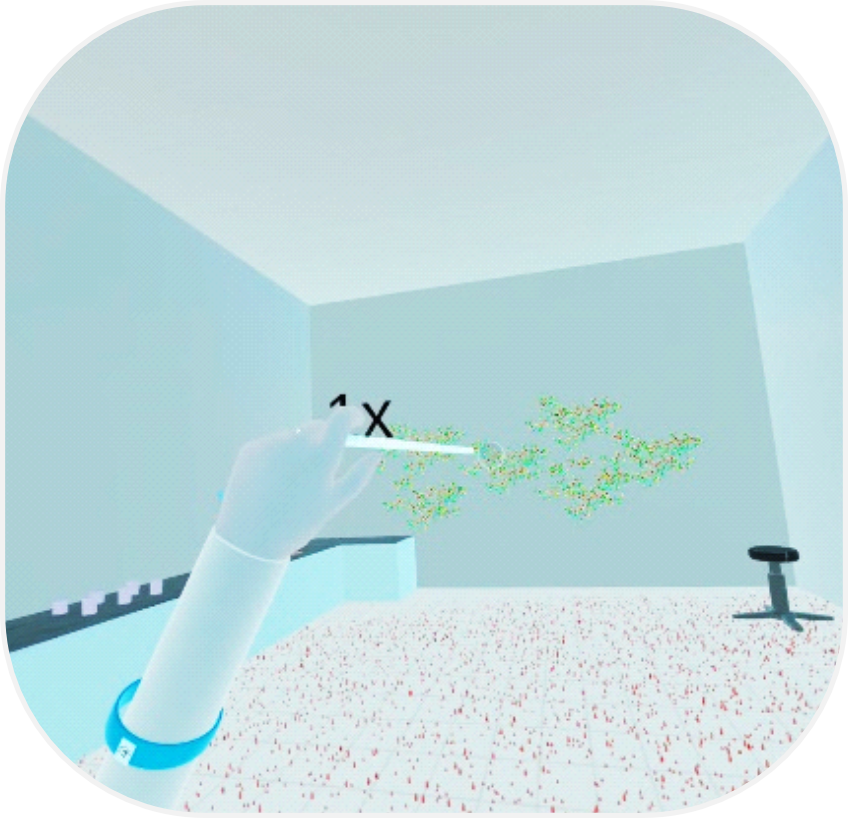
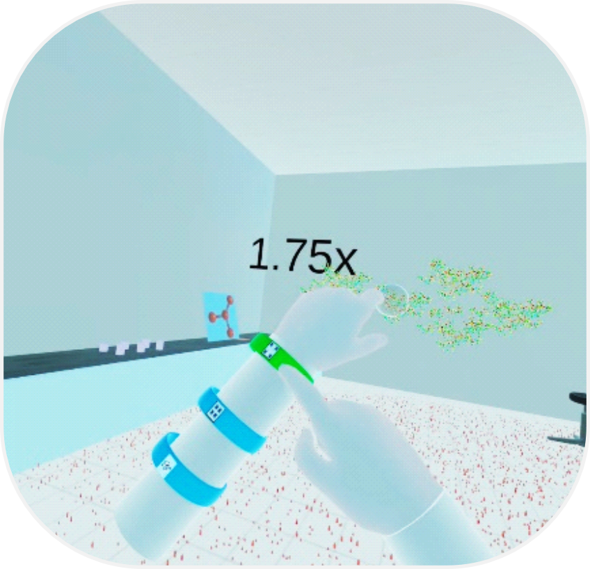
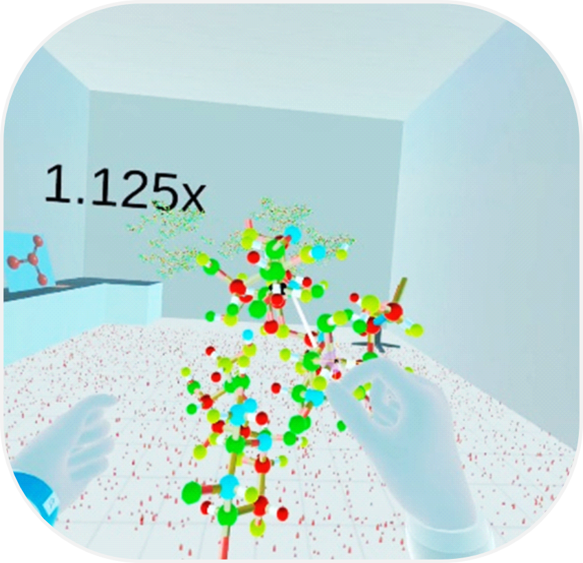
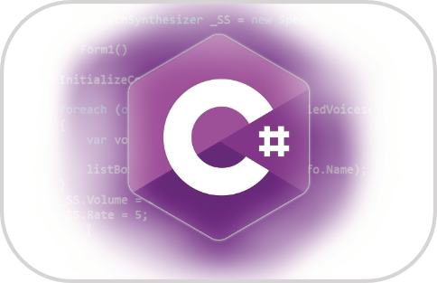

Precise Selection Technique for dense VEs
User Profile

"During XR Research, sometimes I have to select very small, distant and interconnected objects where default interactions like Raycast etc. fail to work"
Problem Statement
It's challenging to select small, distant and interconnected targets in dense VR due to tracking limitations such as noise, jitter, ambiguous depth cues and uncertainty of selection with basic techniques like Raycast etc.
Design Challenge
How can we design a VR selection technique that enables fast, accurate, and low-effort interaction with small, distant, and interconnected targets in dense virtual environments while preserving spatial orientation and minimizing cognitive and physical load
Target Platform

Goal Statement
Devise a selection technique which allows fast and accurate selection of small, distant and interconnected targets in dense virtual environments.
Scope
Enhanced Selection Technique for selection of small, distant and interconnected objects in dense virtual environments using controller-free hand-based interaction
Concept
A multi-stage, spatially preserved selection workflow designed to enable fast and accurate interaction with small, distant, and interconnected targets in dense virtual environments.
- Palm-based sphere casting for stable and precise region selection, reducing the impact of hand jitter and tracking noise.
- Rotationally independent on-body menus for refinement, allowing users to adjust selection parameters while preserving spatial orientation.
- Tap-driven and pinch gestures to minimize physical effort and reduce interaction-induced jitter during selection.
- Progressive refinement that enables precise target acquisition without disrupting spatial context or user immersion.
Screenshots




Building Blocks
